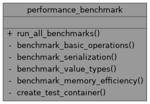
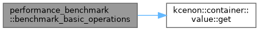
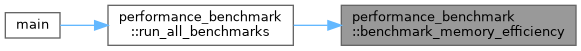
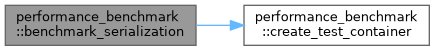
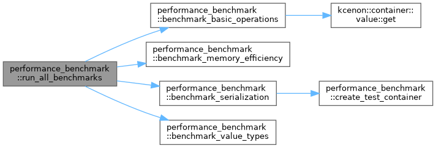

- Generated by
 1.12.0
1.12.0
|
Container System 1.0.0
High-performance C++20 type-safe container framework with SIMD-accelerated serialization
|

Public Member Functions | |
| void | run_all_benchmarks () |
Private Member Functions | |
| void | benchmark_basic_operations () |
| void | benchmark_serialization () |
| void | benchmark_value_types () |
| void | benchmark_memory_efficiency () |
| std::shared_ptr< value_container > | create_test_container (int size) |
Definition at line 16 of file performance_benchmark.cpp.
|
inlineprivate |
Definition at line 30 of file performance_benchmark.cpp.
References kcenon::container::value::get().
Referenced by run_all_benchmarks().

|
inlineprivate |
Definition at line 162 of file performance_benchmark.cpp.
Referenced by run_all_benchmarks().

|
inlineprivate |
Definition at line 74 of file performance_benchmark.cpp.
References create_test_container().
Referenced by run_all_benchmarks().

|
inlineprivate |
Definition at line 107 of file performance_benchmark.cpp.
Referenced by run_all_benchmarks().
|
inlineprivate |
Definition at line 184 of file performance_benchmark.cpp.
Referenced by benchmark_serialization().
|
inline |
Definition at line 18 of file performance_benchmark.cpp.
References benchmark_basic_operations(), benchmark_memory_efficiency(), benchmark_serialization(), and benchmark_value_types().
Referenced by main().
